Our awards since our foundation
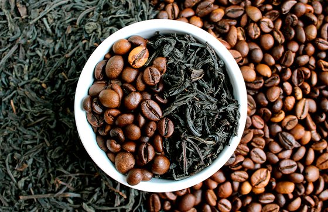
2014
- Fifth place in the municipal roasted coffee competition in San Francisco in the department of Cundinamarca 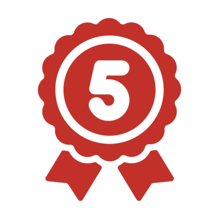
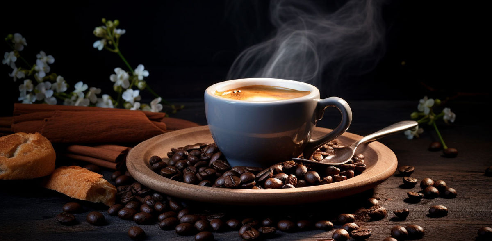
2015
- Fifth place in the municipal roasted coffee competition in San Francisco in the department of Cundinamarca
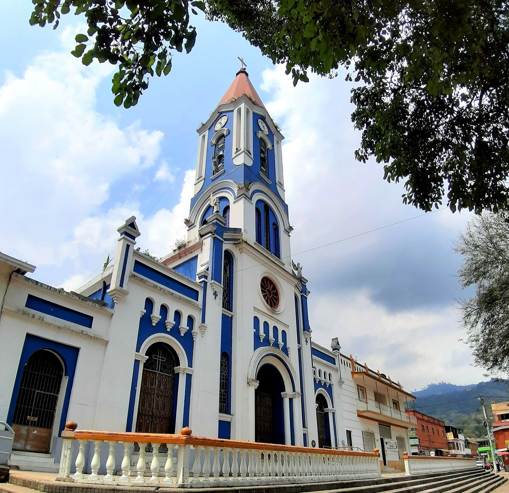
2016
- Participation in the municipal roasted coffee competition in San Francisco in the department of Cundinamarca 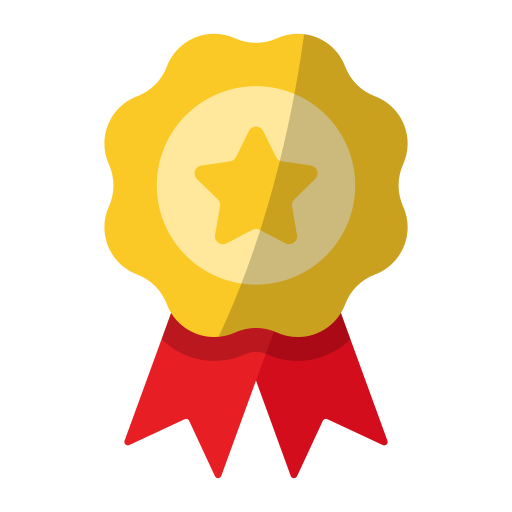
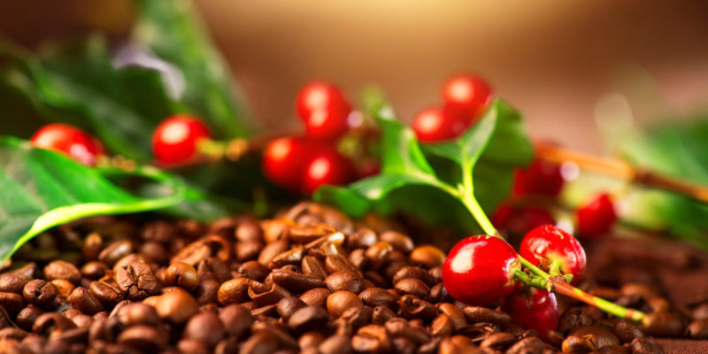
2017
- Second place in the municipal roasted coffee competition in San Francisco in the department of Cundinamarca 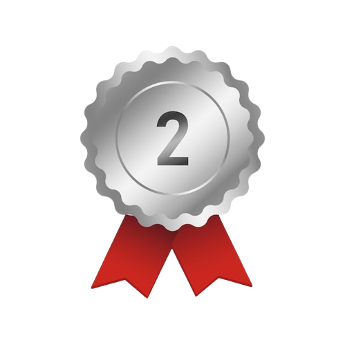
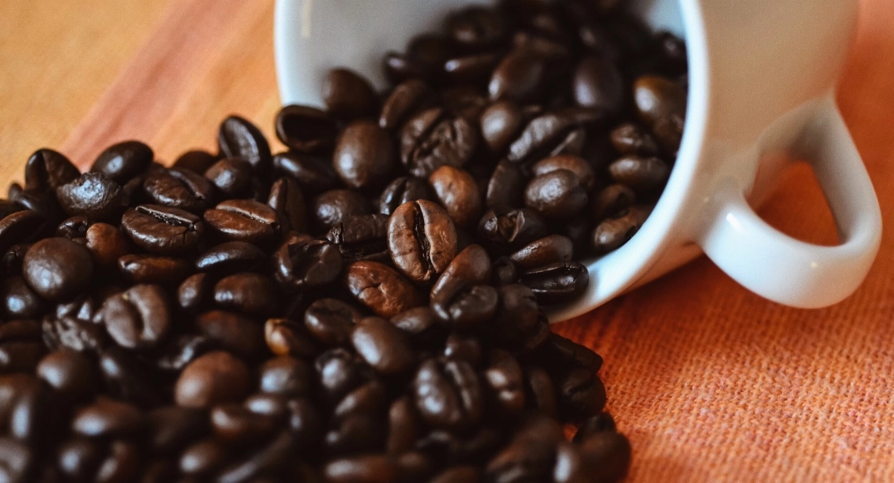
2018
- Third place in the municipal roasted coffee competition in San Francisco in the department of Cundinamarca 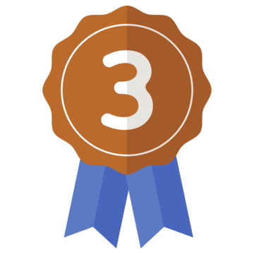
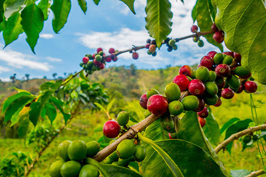
2019
- Fair recognition in the municipal competition of San Francisco in the department of Cundinamarca
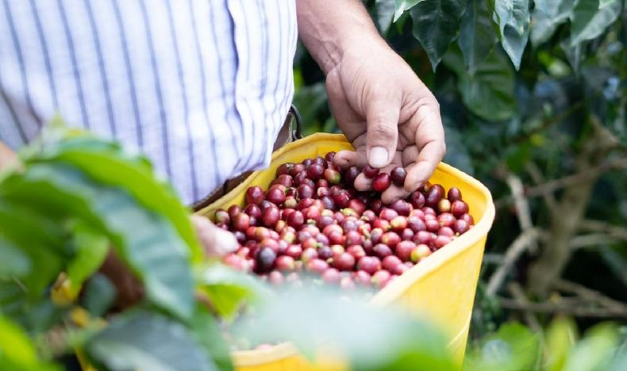
2020
- Fifth place in the municipal roasted coffee competition in San Francisco in the department of Cundinamarca
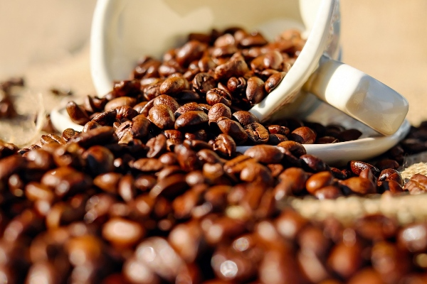
2021
- Participation in the municipal roasted coffee competition in San Francisco in the department of Cundinamarca
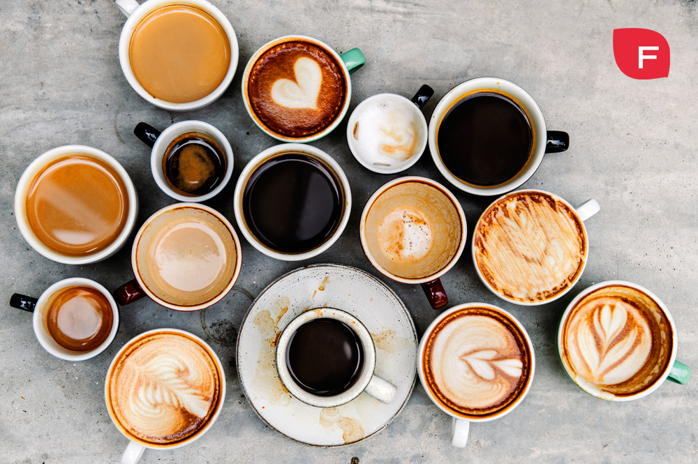
2022
- Second place in the municipal roasted coffee competition in San Francisco in the department of Cundinamarca

2023
- Third place in the municipal roasted coffee competition in San Francisco in the department of Cundinamarca
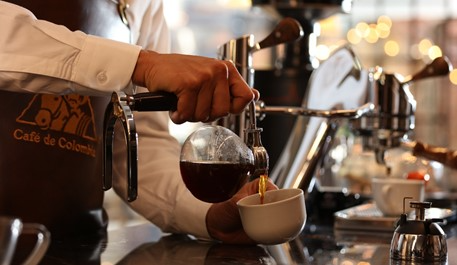
2024
- First place in the municipal roasted coffee competition in San Francisco in the department of Cundinamarca 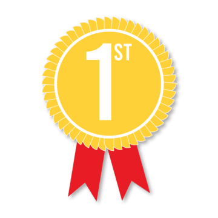
- Fair recognition in the municipal competition of San Francisco in the department of Cundinamarca